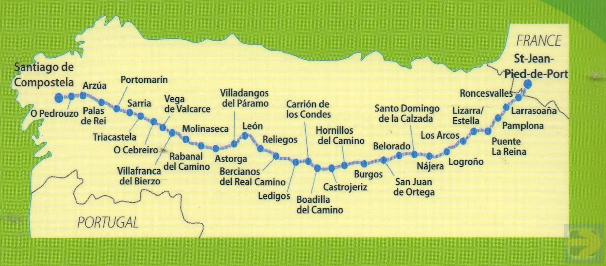

My biggest passion outside of work is walking the many routes of the Camino de Santiago, known in English, as the Way of Saint James. Since 2014, I have personally walked over 3000 kilometres on more than ten Caminos.
Click on key stops for more information
This first Camino was a life changing challenge where over six weeks I walked the most traditional Camino route, called the Camino Frances from the town of Saint Jean Pied de Port in the French Pyrenees to the city of Santiago de Compostela in North West Spain. This route is 800 kilometres in length. Traditionally, pilgrims carry all their possesion on their back and stay in special dormitory style (bunk bed) accommodation dedicated for pilgrims.
This arduous journey was so transformational that I have subsequently organised five week long group walks to walk part of the Camino. In addition I have published five guidebooks both in Kindle and paperback formats for different parts of the Camino
De Sarria a Santiago(Spanish language version)